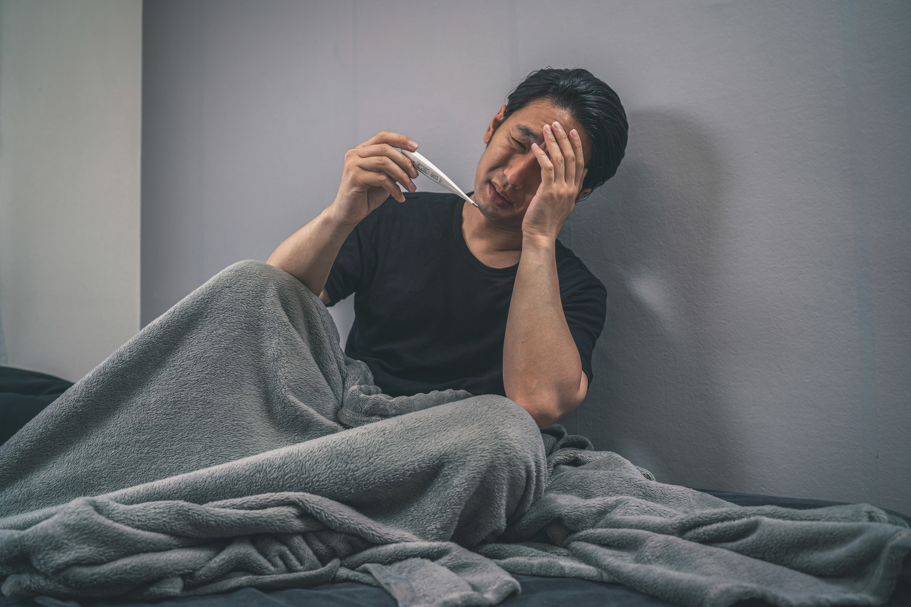
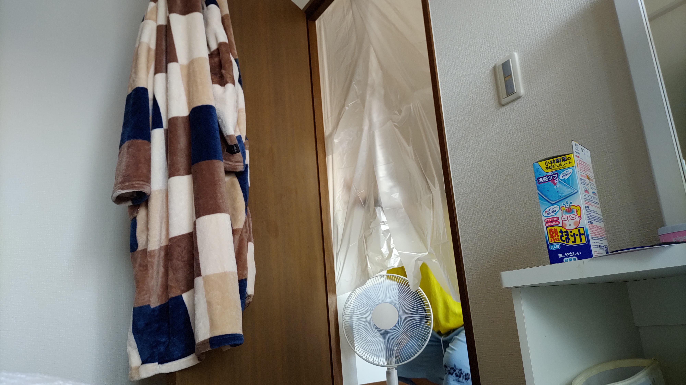

新型コロナウイルス感染症になったらどんな症状が出る？自宅療養の過ごし方まで解説
2022-08-30 by 内田裕之
- 「新型コロナに感染したらどんな症状が出るの？」
- 「自宅療養するときは家族とどう過ごせばいいの？」
この記事はそんな方へ向けて書いています。
こんにちは。
新型コロナウイルス感染症になって自宅療養しているうっちゃんです。
感染者が急増している中でもし自分が感染したらどうしようと悩んでいませんか？
また家庭内感染も怖いと思います。
しかし、実はしっかり療養すれば治りますし、家庭内感染も防げるのです。
この記事では私が新型コロナに感染したときの症状と家庭内感染を防いだ対策法を紹介します。
新型コロナの症状を把握して適切な療養に役立つと嬉しいです。
この記事は内容に広告・プロモーションを含みます。
■目次
新型コロナウイルス感染症に感染してしまった！

2022年8月24日（水）の晩から発熱と喉の痛みが始まりました。
最初はただの風邪だと思っていましたが、高熱が4日続いたので病院で検査を受けた結果、陽性でした。
発症のきっかけ
私は職場内感染です。
スタッフ3名の小さな保険代理店に勤めています。
毎日1〜3人はコロナの保険金請求があるほど感染者数が多い時期だったので、お店も心配だねとよく話をしていました。
ある日、1人に風邪症状が見られました。
その人は営業のエースで、休まれると売上がなくなるのでなかなか休ませることができません。
市販の風邪薬で耐えながら出社いただいてましたが、見事に私が風邪をもらってしまいました。
そしてなかなか治らないので病院で検査を受けたところ、新型コロナウイルス感染症への感染が分かりました。
さらに残る一人も私と同様の症状があると言っていたので、職場内感染が起きていると思われます。
新型コロナウイルス感染症の症状
新型コロナウイルス感染症になったらどんな症状があるのか気になりますよね。
そこで私の症状を紹介します。
※ワクチンは未接種です。
発熱
初日は37.6度でしたが、2日目に40度超の発熱がありました。
その後も38〜39度の高熱が4日間続きました。
いくら休んでも夕方には高熱が出て、なかなか治まらないのが大変でした。
喉の痛み
最初は乾燥したようなのどの違和感だけでした。
でも、2日目からはつばを飲み込むだけでも痛むほどつらかったです。
倦怠感
頭がフラフラしてまともに歩けなかったです。
全身が重くて動く気力がありませんでした。
気力もわかないので、ついネガティブなことを考えがちです。
例えば「仕事を解雇されたらどうしよう」「収入はどうなるんだろう」などです。
味覚の消失
すべての食べ物から味覚が消えるのではなく、特定のものから味が消えました。
私はナッツとカロリーメイトを食べたときに味覚がないと気づきました。
ナッツは甘み？旨味？が感じられなくて、本当に木の皮のような味でした。
カロリーメイトは本当に砂を食べているような感覚です。
一方で、嗅覚は問題なかったです。
食欲の低下
身体がごはんを受け付けなくて、ほとんど食べる気になりませんでした。
でも、2食も抜くとお腹がひもじくなってさらに気持ち悪くなります。
お腹と背中がくっつくような感覚と言いますか。
我慢できずにみそ汁と雑炊を少量ずつ食べていました。
それから4日間は毎食みそ汁と雑炊でしたね。
療養期間と自宅待機期間
新型コロナウイルス感染症になったら外出もできないので、いつまで自粛が必要か気になりますよね。
患者と濃厚接触者のケースをまとめました。
療養期間
患者の場合は、発症日を0日目として10日間です。
私は8月24日に発症したので、9月3日まで療養期間になります。
症状が長引いた場合は療養期間が伸びます。
ただし無症状の方は検体採取日を0日目として7日間で解除となります。
（参考：自宅療養をされる皆様へ、愛媛県）
濃厚接触者の自宅待機期間
同居する妻も濃厚接触者になったので、外出を自粛しました。
部屋の隔離や消毒などを始めた日を0日目として5日間は自宅待機をします。
完全な外出禁止ではなく、生活のためにやむを得ない外出は認められているようです。
どうしても食材の買い出しなどありますからね。
（参考：濃厚接触者の方へのお知らせ）
自宅療養と家庭内感染対策
同居する家族が新型コロナウイルス感染症になったら家庭内感染しないか心配ですよね。
私も生後2ヶ月に満たない赤ちゃんがいたので、妻が非常に神経を使っていました。
部屋を分ける
私と妻の寝る部屋を分けました。
窓は全開にして、常に扇風機で風を送り込んできます。
さらにドアに袋でカーテンを作り、感染拡大を防いでいました。
頼もしい反面、そこまで隔離されると寂しい気持ちもありました。
マスクの着用
妻も私もマスクを常に着用していました。
二重マスクを求められ、寝るときは息苦しかったですね。
手洗いと消毒を繰り返す
トイレに行くたび、歯磨きするたびに手洗いと消毒をしていました。
たとえ深夜の小便であろうとも、手洗いは必須です。
食材を買い込む
妻が体力をなくすと感染しやすくなってしまうので、できるだけ体力を使わないようにインスタント食費を多く買い込みました。
ラーメン、焼きそば、雑炊、カレーなどなど。
お菓子とお茶もよく買っていましたね。
いまもウィダーinゼリーが冷蔵庫を圧迫しています。
困ったときの連絡先
新型コロナウイルス感染症を誰に相談したらいいか分かりづらいですよね。
そこで相談先をまとめておきました。
発熱があったとき
まずは県の一般相談窓口に電話相談します。
（参考：愛媛県の一般相談窓口）
発熱外来に対応している医療機関を教えてくれます。
たいていは車で医療機関に行くことになります。
検体接種までは車で行い、診察は車で終わらせるケースと診療所で行うケースがあります。
検体接種は抗原検査が一般的です。
これは数十分くらいで結果が出るので早いんですよね。
PCR検査だと3日かかると言われてますし。
（保険外適用にして10万円ほど払えば当日中に結果を出す方法もあるとか。）
私は抗原検査で陽性と言われ、解熱剤と咳止め、痰切り、炎症止めをもらって帰りました。
保健所には医師から連絡してもらいました。
コロナになった後
保健所からの連絡を待つことになります。
が、なかなか来ない。
感染者数が多すぎて保健所がパンクしているんです。
最初は電話してまわっていたようですが、感染者が増えすぎてSMSで対応しています。
重症リスクの高い人には電話するようです。
妻が喘息持ちなのと、生後２ヶ月未満の赤ちゃんがいることもあり、保健所に連絡させてもらいました。
ホテル療養の要否や、濃厚接触者の過ごし方なども教わり、大変助かりました。
コロナで生活費が大変なとき
新型コロナで10日間も自宅療養すれば気になるのは収入ですよね。
私も会社員なので収入が途絶えるのは本当に怖く感じました。
そんなときに内閣府の支援情報ナビを見つけました。
支援金などの情報がまとめられており、大変役立つサイトです。
（参考：支援情報ナビ）
私は傷病手当金がもしかしたら使えるかもしれません。
また、8月24日に医療保険に加入したので、成立していれば使える可能性があります。
（加入当日に発症したと言われたら、保険会社から怪しく見られるかもしれませんが、、、）
さらに副業で収入があるのも助かりました。
名刺制作の依頼が来て、1万円の売上が発生したので生活費の足しになります。
会社員以外の収入もしっかり増やしておくと安心感があります。
まとめ
今回は新型コロナに感染したときの症状と家庭内感染を防いだ対策法を紹介しました。
- 新型コロナウイルス感染症になると発熱や喉の痛み、倦怠感、味覚の消失、食欲の低下などがある。
- 家庭内感染を防ぐためには部屋を隔離してマスクを常に着用し、手洗いと消毒をこまめにする。また食材を買い込んでおき、体力を温存しておく。
この記事が面白いと思ったらTwitterやブログで紹介していただけますと嬉しいです。